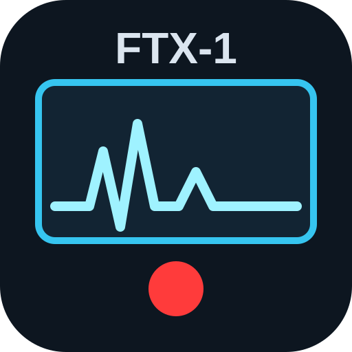

FTX-1 Пульт — сервер
✓ Сохранено
👋 Первый запуск
Подключите FTX-1 к этому ПК кабелем USB и включите его (нужен драйвер Yaesu CP210x).
Проверьте поля в карточке «Трансивер» — программа подобрала их сама. Если порт не найден, нажмите ↻.
Нажмите
«Запустить»
, затем
«Открыть пульт»
.
Подключение к серверу…
▶ Запустить
Открыть пульт
CAT
Звук
Приём
Пультов: 0
📻 Трансивер
COM-порт CAT (у FTX-1 — «Enhanced COM Port»)
↻
Найти
Скорость CAT (как в меню трансивера CAT RATE)
4800
9600
19200
38400
115200
Звук С трансивера — приём, водопад (обычно «Микрофон (USB Audio …)»)
Звук НА трансивер — передача (обычно «Динамики (USB Audio …)»)
Как включать передачу (PTT)
Командой CAT TX1 (рекомендуется)
Командой CAT TX2
Линией RTS второго порта
Линией DTR второго порта
Порт для PTT (у FTX-1 — «Standard COM Port»)
Режим симулятора — проверка без трансивера
📱 Телефон и другие ПК
Пароль для входа не с этого ПК
👁
🎲
Наведите камеру телефона (Wi-Fi та же, что у ПК).
Браузер предупредит о сертификате — нажмите «Дополнительные» → «Перейти на сайт». Потом в меню Chrome:
«Установить приложение»
.
⚙ Запуск
Запускать вместе с Windows (в трее, без окна)
Сразу подключаться к трансиверу
Показывать это окно при запуске
Открывать пульт при запуске
Максимальная длительность передачи, секунд
Сетевые порты
Порт пульта на этом ПК (http)
Порт для телефона и других ПК (https)
Изменение портов вступит в силу после перезапуска программы.
👥 Подключены
Никого
📝 Журнал
Папка программы
Окно можно закрыть — сервер продолжит работать в трее. Снова открыть: значок в трее или ярлык программы.
⏻ Выйти из программы
Сервер остановлен
Это окно можно закрыть.